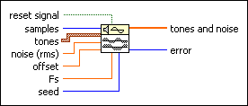
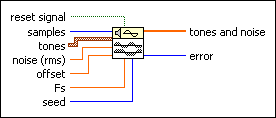

Tones and Noise VI
Owning Palette: Signal Generation VIs
Requires: Full Development System
Generates an array composed of a sum of sine tones, noise, and DC offset.

 Add to the block diagram Add to the block diagram |
 Find on the palette Find on the palette |
Owning Palette: Signal Generation VIs
Requires: Full Development System
Generates an array composed of a sum of sine tones, noise, and DC offset.

| Add to the block diagram |
Find on the palette |
 |
reset signal, if TRUE, resets the phase of each tone to the phase value from the tones array, the seed to the seed control value, and the time stamp to zero. The default is FALSE. | ||||||
 |
samples specifies the number of samples to generate in the output array tones and noise. The default is 1000. | ||||||
 |
tones contains the parameters for each sine tone.
| ||||||
 |
noise specifies the rms level of the additive Gaussian noise. The default is 0.0. | ||||||
|
offset is the DC offset of the signal. The default is 0.0. | ||||||
|
Fs is the sampling rate in samples per second. The default is 1000. | ||||||
|
seed, when greater than 0, causes reseeding of the noise sample generator. The default is –1. LabVIEW maintains the internal seed state independently for each instance of this reentrant VI. For a specific instance of this VI, if seed is less than or equal to 0, LabVIEW does not reseed the noise generator, and the noise generator resumes producing noise samples as a continuation of the previous noise sequence. | ||||||
 |
tones and noise is the generated output array. | ||||||
 |
error returns any error or warning from the VI. You can wire error to the Error Cluster From Error Code VI to convert the error code or warning into an error cluster. |